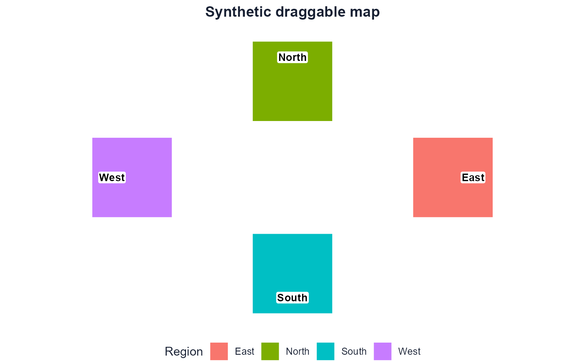
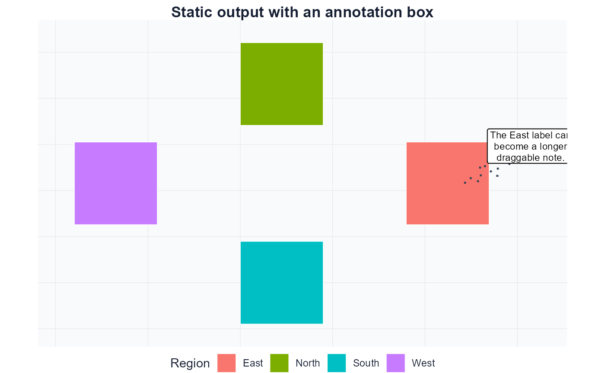

dragmapr is built around a deliberately small loop for
draggable plots:
- Start with projected
sfgeometry and a grouping column. - Open the draggable browser helper with
drag_map_prototype(open = interactive()). - Drag regions, labels, or annotation boxes until the layout looks right.
- Copy or download the offset CSVs from the helper panel.
- Optionally reproduce the layout as a static
ggplot2image withrender_dragged_map().
The interactive helper is the primary deliverable. Step 5 is optional — use it when you need a reproducible image for a report or publication.
Toy geometry
All examples below use a projected toy dataset so the workflow can be tested without downloading shapefiles.
library(dragmapr)
make_square <- function(x0, y0, size = 100000) {
sf::st_polygon(list(rbind(
c(x0, y0), c(x0 + size, y0), c(x0 + size, y0 + size),
c(x0, y0 + size), c(x0, y0)
)))
}
regions <- sf::st_sf(
region = c("North", "South", "East", "West"),
label = c("North", "South", "East", "West"),
geometry = sf::st_sfc(
make_square(0, 140000),
make_square(0, 0),
make_square( 140000, 70000),
make_square(-140000, 70000),
crs = 3857
)
)
drag_map_prototype() — full parameter reference
Data
These three arguments identify the geometry and what to group or label.
| Argument | Default | Description |
|---|---|---|
x |
(required) | Projected sf object. Must not be in a geographic
(lon/lat) CRS. |
region_col |
(required) | Column name that defines draggable groups. |
label_col |
region_col |
Column used for label text. Defaults to the grouping column. |
# Minimal call — one grouping column used for both groups and labels
drag_map_prototype(regions, region_col = "region", open = interactive())
# Separate column for label text
drag_map_prototype(regions, region_col = "region", label_col = "label", open = interactive())Labels
Control whether labels appear and whether they can be dragged independently.
| Argument | Default | Description |
|---|---|---|
labels |
TRUE |
TRUE derives one label per region automatically.
FALSE shows no labels. Supply a data frame from
as_drag_labels() or as_drag_annotations() for
custom labels. |
draggable_labels |
TRUE |
When TRUE, labels can be moved independently. When
FALSE, labels follow their region but cannot be
repositioned on their own. |
# No labels
drag_map_prototype(regions, region_col = "region", labels = FALSE, open = interactive())
# Labels follow regions but cannot be dragged separately
drag_map_prototype(regions, region_col = "region",
draggable_labels = FALSE, open = interactive())
# Custom label data frame
custom_labels <- make_region_labels(regions, region_col = "region", label_col = "label")
drag_map_prototype(regions, region_col = "region",
labels = custom_labels, open = interactive())Label styling
Choose between three marker shapes for short text labels — rounded box, circle, or text-only — and control their sizes and font.
| Argument | Default | Description |
|---|---|---|
label_marker |
TRUE |
Draw a visible marker shape behind label text. FALSE is
a shortcut for label_marker_shape = "none". |
label_marker_shape |
"rect" |
Shape behind the label text: "rect" (rounded box),
"circle", or "none" (text only with an
invisible drag target). |
label_text_size |
11 |
Label text size in browser pixels. Applies to all label types. |
label_width |
64 |
Width of rounded-box label markers in pixels. |
label_height |
30 |
Height of rounded-box label markers in pixels. |
label_radius |
12 |
Circle radius in pixels. Used when
label_marker_shape = "circle". |
label_box_width |
150 |
Width of draggable annotation box (info-box style) in pixels. |
label_box_height |
72 |
Height of draggable annotation box in pixels. |
# Rounded-box markers (default) — adjust size and text
drag_map_prototype(
regions, region_col = "region",
label_marker_shape = "rect",
label_text_size = 12,
label_width = 80,
label_height = 32,
open = interactive()
)
# Circle markers
drag_map_prototype(
regions, region_col = "region",
label_marker_shape = "circle",
label_radius = 18,
label_text_size = 11,
open = interactive()
)
# Text only — no visible marker, just draggable text
drag_map_prototype(
regions, region_col = "region",
label_marker_shape = "none",
label_text_size = 13,
open = interactive()
)
# Annotation boxes (info-box style with connectors)
notes <- as_drag_annotations(
make_region_labels(regions, region_col = "region"),
width_px = 160,
height_px = 70,
connector = TRUE,
connector_type = "elbow"
)
drag_map_prototype(
regions, region_col = "region",
labels = notes,
label_box_width = 160,
label_box_height = 70,
open = interactive()
)Connectors
Connector lines link a label or annotation box back to its region
anchor. They are only drawn for labels that have
connector = TRUE in their label data frame — set that flag
via as_drag_annotations(..., connector = TRUE) or
as_drag_labels(). The line style ("straight",
"elbow", "curve", "squiggle") is
stored per-label in the connector_type column.
| Argument | Default | Description |
|---|---|---|
connector_color |
"#334155" |
Browser connector line colour. |
connector_linewidth |
1.3 |
Connector line thickness in browser pixels. |
connector_linetype |
"solid" |
Browser connector line pattern: "solid",
"dashed", or "dotted". |
connector_endpoint |
"none" |
Browser connector endpoint: "none" or
"arrow". |
connector_smart |
FALSE |
Let the browser choose straight, elbow, or curved connector geometry from the current label displacement. |
drag_map_prototype(
regions, region_col = "region",
labels = notes, # labels with connector = TRUE
connector_color = "#334155",
connector_linewidth = 2,
connector_linetype = "dashed",
connector_endpoint = "arrow",
connector_smart = TRUE,
open = interactive()
)Movement context
Movement context is optional and off by default. It helps explain where a moved region came from without changing the underlying offset data.
| Argument | Default | Description |
|---|---|---|
show_origin_outlines |
FALSE |
Draw the original outline for regions with non-zero offsets. |
show_movement_connectors |
FALSE |
Draw a line from each moved region’s original representative point to its current location. |
movement_connector_color |
"#64748b" |
Movement connector colour. |
movement_connector_opacity |
0.72 |
Movement connector opacity from 0 to 1. |
movement_connector_linewidth |
1.4 |
Browser movement connector thickness in pixels. |
movement_connector_linetype |
"solid" |
Movement connector pattern: "solid",
"dashed", or "dotted". |
movement_connector_endpoint |
"closed" |
Movement connector endpoint: "closed",
"open", or "none". |
show_drag_trail |
FALSE |
Browser-only fading outline trail while a region is actively dragged. |
drag_map_prototype(
regions, region_col = "region",
show_origin_outlines = TRUE,
show_movement_connectors = TRUE,
movement_connector_color = "#64748b",
movement_connector_linetype = "dashed",
movement_connector_endpoint = "open",
show_drag_trail = TRUE,
open = interactive()
)Static exports support origin outlines and movement connectors too:
render_dragged_map(
regions,
region_offsets = region_offsets,
region_col = "region",
show_origin_outlines = TRUE,
show_movement_connectors = TRUE,
movement_connector_linetype = "dotted",
movement_connector_endpoint = "closed"
)Initial positions
Supply previously exported offset tables to pre-load a saved layout so dragging can continue from where it left off.
| Argument | Default | Description |
|---|---|---|
region_offsets |
NULL |
Data frame with columns region, dx_m,
dy_m. All regions start at zero when
NULL. |
label_offsets |
NULL |
Data frame with columns label_id, region,
dx_m, dy_m. All labels start at zero when
NULL. |
# Resume from previously downloaded CSVs
region_csv <- read_offsets("drag_region_offsets.csv")
label_csv <- read_label_state("drag_label_offsets.csv")
drag_map_prototype(
regions, region_col = "region",
region_offsets = region_csv,
label_offsets = label_csv,
open = interactive()
)read_label_offsets() is retained as an alias for
read_label_state(), and apply_label_offsets()
is retained as an alias for apply_label_state(). Likewise,
make_labels() remains an alias for
make_region_labels() for older scripts.
If the offsets were exported as a Spatial Studio project ZIP, use the one-line project renderer instead of wiring the CSV files together manually:
render_dragmapr_project(
"dragmapr-project.zip",
file = "dragged-map.png"
)RStudio addin
In RStudio, install the package and use Addins > Launch
dragmapr to open a compact prototype gadget. The addin looks
for sf objects in .GlobalEnv, lets you choose
the region and label columns, and assigns region_offsets
and label_offsets when you click Done.
Create or load the sf object before opening the addin. If
you call dragmapr_addin() directly, pass env =
to work with another environment.
Colour palette
| Argument | Default | Description |
|---|---|---|
region_palette |
NULL |
Named character vector mapping each region value to a hex colour
string. Uses a built-in 8-colour cycling palette when
NULL. |
Matching the interactive palette to a
render_dragged_map() call makes the draggable preview and
the final static image look identical.
my_palette <- c(
North = "#4C78A8",
South = "#F58518",
East = "#54A24B",
West = "#B279A2"
)
drag_map_prototype(
regions, region_col = "region",
region_palette = my_palette,
show_legend = TRUE,
open = interactive()
)Legend
A compact colour legend can be embedded directly inside the browser helper. It is hidden by default because many maps are labelled and need no legend.
| Argument | Default | Description |
|---|---|---|
show_legend |
FALSE |
Show a colour legend in the helper. |
max_legend_keys |
25 |
Suppress the legend automatically when the number of groups exceeds
this value. Set to Inf to always show it regardless of
group count. |
legend_position |
"bottom" |
Where the legend appears: "bottom", "top",
"left", "right", or "none". |
legend_title |
"Region" |
Title shown above the legend keys. |
legend_values |
NULL |
Optional character vector of region values to include in the legend.
NULL includes all values. |
drag_map_prototype(
regions, region_col = "region",
region_palette = my_palette,
show_legend = TRUE,
legend_position = "bottom", # "top" | "left" | "right" | "none"
legend_title = "Region",
legend_values = c("North", "East"),
max_legend_keys = 25,
open = interactive()
)Use label_values when an app should temporarily display
only selected labels while preserving all label offsets:
drag_map_prototype(
regions, region_col = "region",
label_values = c("North", "East"),
open = interactive()
)Output file and display
| Argument | Default | Description |
|---|---|---|
file |
"drag-map.html" |
File path for the written standalone HTML. |
open |
FALSE |
Open the file in the default browser via browseURL()
after writing. |
side_panel |
TRUE |
Show the built-in copy/download side panel. Shiny apps that provide
their own export controls can set this to FALSE to reclaim
the full canvas. |
map_background |
"white" |
Helper background: "white", "transparent",
"light_grid", or "dark". |
# Write to a chosen path without opening (e.g. CI, server, or Shiny)
drag_map_prototype(
regions, region_col = "region",
file = "output/my_map.html",
map_background = "light_grid",
side_panel = TRUE,
open = FALSE
)
# Embedded in a Shiny app — hide the panel; the app provides its own controls
drag_map_prototype(
regions, region_col = "region",
side_panel = FALSE,
file = tempfile(fileext = ".html")
)Optional: Static rendering
When you need a reproducible ggplot2 image, pass the
exported offset tables to render_dragged_map(). The data
frames below stand in for downloaded CSVs:
region_offsets <- data.frame(
region = c("North", "South", "East", "West"),
dx_m = c(0, 0, 60000, -60000),
dy_m = c(50000, -50000, 0, 0)
)
label_state <- data.frame(
label_id = c("North", "South", "East", "West"),
region = c("North", "South", "East", "West"),
dx_m = c(0, 0, 25000, -25000),
dy_m = c(30000, -30000, 0, 0)
)
render_dragged_map(
regions,
region_offsets = region_offsets,
region_col = "region",
label_col = "label",
label_offsets = label_state,
title = "Synthetic draggable map"
)
The same annotation types available in the interactive helper work in static output:
notes <- as_drag_annotations(data.frame(
label_id = "east-note",
region = "East",
label = "The East label can become a longer draggable note.",
x = 210000, y = 120000
), connector = TRUE, connector_type = "squiggle")
render_dragged_map(
regions,
region_offsets = region_offsets,
region_col = "region",
labels = notes,
label_offsets = data.frame(
label_id = "east-note", region = "East",
dx_m = 80000, dy_m = 45000
),
connector_linewidth = 0.8,
connector_linetype = "dotted",
connector_endpoint = "arrow",
legend_title = "Region",
map_background = "light_grid",
title = "Static output with an annotation box"
)
Edit the source features
Sometimes the right display map is not just a moved map. It is a lighter map: one or more features are removed, or a corrected feature is swapped in before the final layout is composed.
feature_rows <- spatial_feature_table(regions, key_col = "region")
feature_rows[, c(".feature_id", ".row", ".geometry_type")]
regions_without_north <- remove_spatial_features(
regions,
ids = "North",
key_col = "region"
)
regions_only_south_west <- keep_spatial_features(
regions,
ids = c("South", "West"),
key_col = "region"
)The editing helpers return ordinary sf objects, so the
result can go straight back into the draggable helper:
drag_map_prototype(
regions_without_north,
region_col = "region",
open = interactive()
)A small Shiny editor
This is the same loop inside a minimal Shiny app: render the widget, receive state from the browser, and push a live display update from the server.
library(shiny)
library(dragmapr)
ui <- fluidPage(
checkboxInput("origin", "Show origin outlines", TRUE),
dragmaprOutput("map", height = "650px"),
verbatimTextOutput("state")
)
server <- function(input, output, session) {
current_state <- reactiveVal(dragmapr_state(crs = 3857))
output$map <- renderDragmapr({
dragmapr_widget(
regions,
region_col = "region",
state = current_state(),
show_origin_outlines = input$origin
)
})
observeEvent(input$map_state, {
current_state(dragmapr_widget_state(input$map_state))
})
observeEvent(input$origin, {
updateDragmapr(session, "map", show_origin_outlines = input$origin)
})
output$state <- renderPrint(summary(current_state()))
}
shinyApp(ui, server)Working with your own data
Use projected polygon data for editing. If your source file is
longitude and latitude, run it through
prepare_dragmapr_sf() first so offsets are measured in
metres:
my_sf <- read_dragmapr_sf_url("https://example.com/regions.geojson")
my_sf <- prepare_dragmapr_sf(my_sf)
drag_map_prototype(
my_sf,
region_col = "region_name",
label_col = "short_name",
map_background = "light_grid",
open = interactive()
)The package keeps the display edits separate from the source geometry. That separation is the useful part: you can drag, remove, restore, export, and render without hiding how the final map was made.